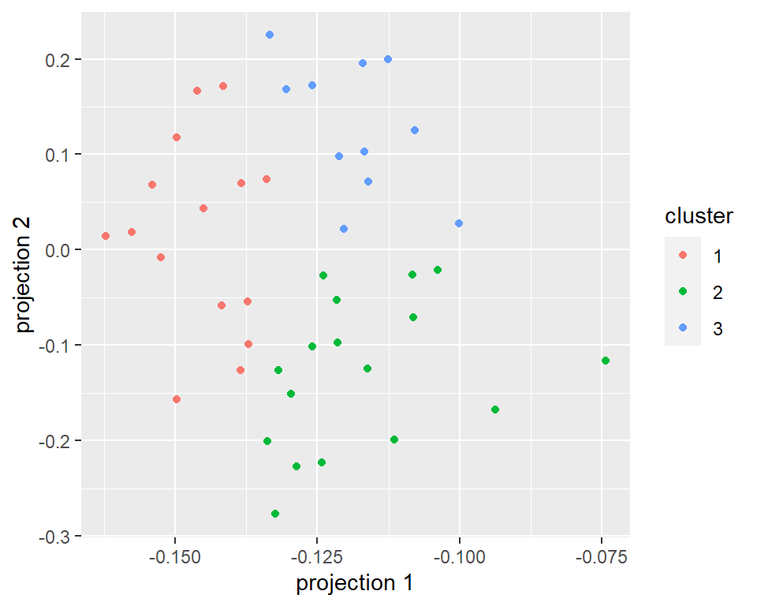

PSTAT197A/CMPSC190DD Fall 2022
Trevor Ruiz
UCSB
add .DS_Store to .gitignore
open repo project in RStudio session (not another project or new session)
repo clone directory must be kept intact; can move the entire directory but not individual files
use client not terminal, at least to start out
others?
review sampling concepts
introduce class survey data
present descriptive analysis
population: collection of all subjects/units of interest
sample: subjects/units observed in a study
statistical methodology strives to account for the possibility that the sample could have been different in order to make reliable inferences about the population based on knowledge of the sampling mechanism
Even if inference isn’t possible, data still have value and could be used for:
descriptive analysis of the sample;
hypothesis generation;
developing analysis pipelines.
Prediction is a separate goal but still a form of generalization.
Several issues arise very often in practice that compromise or complicate an analyst’s ability to make inferences (or predictions). Among them:
scope of inference from the sample doesn’t match the study population
subjects/units are selected haphazardly or by convenience
researcher conflates sample size with number of observations, i.e., takes lots of measurements on few subjects/units
The following questions can help make an assessment of the scope of inference:
(protocol) how were subjects/units chosen for measurement and how were measurements collected?
(mechanism) was there any random selection mechanism?
(exclusion) are there any subjects/units that couldn’t possibly have been chosen?
(nonresponse) were any subjects/units selected but not measured?
survey distributed to all students offered enrollment in PSTAT197A fall 2022
\(n = 65\) responses
includes a few students who did not enroll
does not include several students who did not enroll
does not include one student who enrolled late
no random selection
From the reading responses:
It depends on the question. If you want to draw conclusions about the pstat197a class specifically, this sample is the population and thus will have reliable data. If you want to draw conclusions about the pstat department as a whole, then this is a bad sample because it is likely biased and thus unreliable
The comment points to two ways to view the data:
a census of PSTAT197A enrollees
a convenience sample of…
capstone applicants OR
students qualified for capstones OR
students interested in data science OR
all UCSB students???
Either way – census or convenience sample – excludes inference.
census \(\longrightarrow\) no inference needed
convenience \(\longrightarrow\) no inference possible
So on a practical level, it won’t make much difference for designing an analysis of the survey data.
Any analysis of survey data should be regarded as descriptive in nature:
summary statistics and/or models are not reliable measures of any broader population
results should be interpreted narrowly in terms of the sample at hand
Start simple and add complexity gradually.
From simpler to more complex consider questions involving:
Sample characteristics
Single-variable summaries
Among the students offered a seat in PSTAT197, what fields of study are the students most interested in?
What level of comfort do students interested in data analysis at UCSB have with mathematics?
Multivariate summaries
Model-based outputs
Is the proportion of men/women in the class equal (taking into account randomness)?
| standing | n |
|---|---|
| Junior | 9 |
| Senior | 56 |
| gender | n |
|---|---|
| Female | 25 |
| Male | 40 |
| race | n |
|---|---|
| Asian | 41 |
| Caucasian | 17 |
| Prefer not to say | 6 |
| Unknown | 1 |
Columns: consent to share project preferences
Rows: consent to share background and preparation
| No | Yes | |
|---|---|---|
| No | 3 | 3 |
| Yes | 2 | 57 |
The following information have been removed from the dataset distributed to the class:
personal information from section 1 of the survey
long text and free response answers, contain some personal details
responses from students who did not consent to share
type distinction between research experiences
What level of comfort do students interested in data analysis at UCSB have with mathematics?
| variable | max | mean | median | min |
|---|---|---|---|---|
| math.comf | 5 | 3.847458 | 4 | 2 |
| prog.comf | 5 | 3.966102 | 4 | 3 |
| stat.comf | 5 | 4.084746 | 4 | 2 |
| variable | mean | median |
|---|---|---|
| math | 2.355932 | 2 |
| prog | 2.237288 | 2 |
| stat | 2.576271 | 3 |
| prog | n1 | math | n2 | stat | n3 |
|---|---|---|---|---|---|
| Beg | 3 | Beg | 3 | Beg | 2 |
| Int | 39 | Int | 32 | Int | 21 |
| Adv | 17 | Adv | 24 | Adv | 36 |
Are students who ranked themselves as strong in statistics, mathematics, and computing more likely or less likely to select an ‘industry’ project as the project type that they want to work on?
| mean.proficiency.fac | both | ind | lab |
|---|---|---|---|
| [1,2.33] | 6 | 25 | 1 |
| (2.33,2.67] | 5 | 9 | 1 |
| (2.67,3] | 3 | 6 | 1 |
| mean.proficiency.fac | both | ind | lab | n |
|---|---|---|---|---|
| [1,2.33] | 0.188 | 0.781 | 0.031 | 32 |
| (2.33,2.67] | 0.333 | 0.600 | 0.067 | 15 |
| (2.67,3] | 0.300 | 0.600 | 0.100 | 10 |
Consider the distinct combinations of comfort and proficiency ratings (separately):
| prog | math | stat | n |
|---|---|---|---|
| 1 | 1 | 1 | 1 |
| 1 | 2 | 2 | 1 |
| 1 | 2 | 3 | 1 |
| 2 | 1 | 1 | 1 |
| 2 | 1 | 2 | 1 |
| 2 | 2 | 2 | 13 |
| 2 | 2 | 3 | 11 |
| 2 | 3 | 2 | 3 |
| 2 | 3 | 3 | 10 |
| 3 | 2 | 2 | 2 |
| 3 | 2 | 3 | 4 |
| 3 | 3 | 2 | 1 |
| 3 | 3 | 3 | 10 |
| prog | math | stat | n |
|---|---|---|---|
| 3 | 2 | 2 | 1 |
| 3 | 3 | 3 | 2 |
| 3 | 3 | 4 | 2 |
| 3 | 3 | 5 | 2 |
| 3 | 4 | 3 | 4 |
| 3 | 4 | 4 | 7 |
| 4 | 3 | 3 | 2 |
| 4 | 3 | 4 | 5 |
| 4 | 3 | 5 | 2 |
| 4 | 4 | 3 | 1 |
| 4 | 4 | 4 | 5 |
| 4 | 4 | 5 | 3 |
| 4 | 5 | 3 | 1 |
| 4 | 5 | 4 | 4 |
| 4 | 5 | 5 | 2 |
| 5 | 3 | 4 | 5 |
| 5 | 3 | 5 | 1 |
| 5 | 4 | 4 | 2 |
| 5 | 4 | 5 | 1 |
| 5 | 5 | 4 | 1 |
| 5 | 5 | 5 | 6 |
Can students be grouped based on combinations of preferences and comfort levels?
| prog.prof | math.prof | stat.prof | prog.comf | math.comf | stat.comf | size | cluster |
|---|---|---|---|---|---|---|---|
| 2.478 | 2.739 | 2.957 | 4.435 | 4.522 | 4.522 | 23 | 1 |
| 2.048 | 1.857 | 2.238 | 4.048 | 3.048 | 4.048 | 21 | 2 |
| 2.133 | 2.467 | 2.467 | 3.133 | 3.933 | 3.467 | 15 | 3 |

Clustering method, “k means”, groups data by nearest Euclidean distance to each of \(k\) centers. \(k\) is user-specified; the method finds the centers that minimize within-cluster variance.
Based on the centers:
Cluster 1: advanced proficiency, very comfortable
Cluster 2: intermediate with less mathematical preparation
Cluster 3: intermediate with less programming preparation
Your task is to extend this analysis with your group by next Tuesday.
Here are some ideas:
explore variable associations further (e.g., coursework and self-evaluations)
experiment with clustering on different variable subsets or using different methods
summarize domain or area of interest variables (requires some text manipulation)
Most of next meeting we’ll devote to planning your group’s task.
Do a little brainstorming on your own
Come with a few questions/ideas